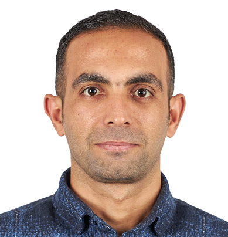

IT SKILLS

SADETTIN KARATAS
"Passionate about starting a new career in IT. Have six years of work experience in security-oriented data analyzing. Holder of a master degree from Geneva University in the field of Conflicts Resolution and International Security."
WORK EXPERIENCE
03/2022 - 07/2022
ASSISTANT/ORS GROUP/VAUD
- Assistant in a refugee camp that opened to welcome refugees from Ukraine
- Organizing activities for refugees and dealing with any issues in the camp
02/2020 - 06/2022
FOUNDER OF WWW.BIZIMKILER.CH/GENEVA
- Offering high quality dried fruits imported from Turkey to the Swiss market via my online store created by me.
06/2018 - 01/2020
RECEPTIONIST/GENEVEROULE/GENEVA
- Weekend job during my master program in Geneva University
- Managing a bike renting store, dealing with the clients and stocks
04/2015 - 05/2017
LEGAL CONSULTANT/SAHINLER LAW FIRM/ISTANBUL, TURKEY
- Legal consultant in penal code
07/2010 - 04/2015
HEAD OF TEAM/MINISTRY OF INTERIOR/ISTANBUL, TURKEY
- Police inspector and head a team that analyzing data for countering organized crime groups
EDUCATION
09/2022 - 12/2022
POWERCODERS - CODING ACADEMY FOR REFUGEES/BERN
- Foundations in HTML, CSS, JavaScript; specialization tracks upcoming
- Weekly business & social skills training (team work, communication, etc.)
01/2019 - 01/2020
MASTER DEGREE IN CONFLICT RESOLUTION AND INTERNATIONAL SECURITY/ UNIVERSITY OF GENEVA
- International security and geopolitics
- Cyber Security and Switzerland
09/2006 - 07/2010
BACHELOR DEGREE/ FACULTY OF SECURITY SCIENCES, ANKARA, TURKEY
- Introduction to Sociology and Criminology
- Law General, Civil Code, Specialization in Penal Code
HOBBIES
FOOTBALL
I am playing football for FC Versoix in Geneva.
FOOTBALL
I have been road biking for 15 years and
everything about the bikes
is my passion,
especially repairing my bikes.
VOLUNTEER EXPERIENCE
07/2018 - 09/2019
LIBRARY WORKER/RED CROSS GENEVA
- Worked as staff to organize traveling libraries across the refugee camps in Geneva
07/2018 - 09/2020
TRANSLATOR/RED CROSS GENEVA
- I translated many children's books from French to Turkish and Kurdish.
01/2020 - 06/2020
COVID VOLUNTEER/VILLE DE MEYRIN/GENEVA
- I did shopping for the elderly people during the first wave of covid under the organization of the city of Meyrin.
CONTACT